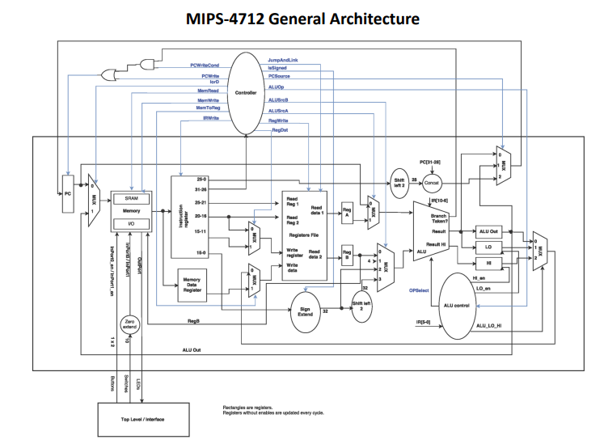

My projects with VHDL
MIPS 4712
My top project in terms of VHDL, and the one im most proud of for all these projects,
is a 32 bit MIPS based multi-cycle CPU.
It has memory mapped IO via its own custom memory decoding logic, it can jump, branch, multiply,
perform logical operations, and features its own built in ram. No external ram necessary!

8-Tap FIR Filter
My second best VHDL project is an 8-tap 32 bit FIR filter.
It consists of the fir filter, with the inputs of it connected to a ROM containing values to be filtered, along with a RAM module where the filtered outputs will be stored. It also contains the necessary control logic, such as a RAM and ROM address generator, and a controller for triggering the address generators and the FIR filter.
It consists of the fir filter, with the inputs of it connected to a ROM containing values to be filtered, along with a RAM module where the filtered outputs will be stored. It also contains the necessary control logic, such as a RAM and ROM address generator, and a controller for triggering the address generators and the FIR filter.
GCD Calculator
This is a very simple GCD calculator.
It calculates the GCD of two numbers via the euclidean algorithm.
This makes it the most effecient hardware implementation of GCD calculation that is possible.
8 bit ALU
This is a very basic but powerful 8 bit ALU. Similar to what was used with the
MIPS 4712.
It can perform logical operations such as not, and, or, and XOR, it can add, subtract, multiply, shift left or right, and it can also swap the upper and lower halfs of input 1.
It can perform logical operations such as not, and, or, and XOR, it can add, subtract, multiply, shift left or right, and it can also swap the upper and lower halfs of input 1.
Multi-use Counter
This design serves two purposes:
1. As an up/down counter with pre-load capabilities
2. As a gray code counter.
The gray code counter is special because it allows you to count by only flipping one bit at a time. Preventing any misleading transition values while counting.
1. As an up/down counter with pre-load capabilities
2. As a gray code counter.
The gray code counter is special because it allows you to count by only flipping one bit at a time. Preventing any misleading transition values while counting.